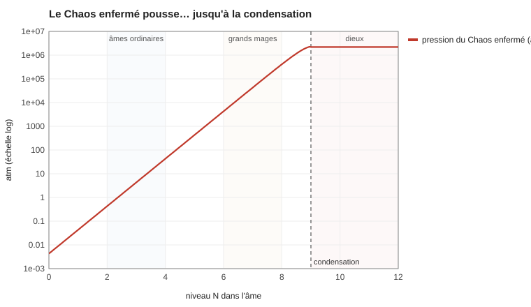

SIM-20 — Le chaon : physique quantique du Chaos
Code : sim20_quantique.py (Python pur, python -I sim20_quantique.py). Les lois qui en sortent : PHY-006 Le chaon et l'âme. Suite de SIM-19 Le champ du Chaos chiffré.
Question. SIM-19 a montré que le Chaos libre dilué est un gaz parfait de chaons, de « température » kT_χ = 434 J. Que se passe-t-il quand on le concentre beaucoup, dans une âme ou dans un dieu ?
1. L'hypothèse : le chaon est un boson
Les particules sont de deux familles :
- les fermions (électrons, protons) refusent de partager le même état : c'est le principe d'exclusion de Pauli (1925), qui donne aux atomes leurs couches et toute la chimie ;
- les bosons (photons, atomes d'hélium 4) aiment partager le même état.
Quand on rapproche assez des bosons (ou qu'on les refroidit), leurs ondes se chevauchent et ils tombent tous dans le même état : ils ne forment plus qu'une seule onde géante, un seul objet quantique. C'est la condensation de Bose–Einstein (prédite en 1924–1925, obtenue en laboratoire en 1995 par Cornell, Wieman et Ketterle, prix Nobel 2001). L'hélium superfluide, qui monte le long des parois et coule sans frottement, en est un exemple.
Le chaon est un boson. Dilué, le Chaos se comporte comme un gaz ordinaire ; concentré, il se condense.
Où placer le seuil ? Tes textes donnent déjà la borne : la concentration va jusqu'à 10⁹. On pose que c'est le seuil de condensation. Au-delà, ce n'est plus du Chaos « concentré » : c'est un autre état de la matière. C'est pour ça que l'échelle canon s'arrête là.
Ce seuil fixe la longueur d'onde du chaon : ≈ 1,4 mm. Un chaon est une onde d'un millimètre et demi, comme un grain de sable, pas une poussière.
2. L'âme est un récipient sous pression
Un gaz pousse sur ce qui l'enferme : P = n·kT. Le Chaos traverse la matière sans la pousser (comme la lumière traverse le verre), mais l'âme le tient enfermé, donc elle en subit la pression. C'est la poussée permanente de C-10, chiffrée. On prend pour l'âme le volume du corps (≈ 0,05 m³ **).

| Âme | Chaons | Niveau | Pression | Si elle se vide d'un coup dans l'air ordinaire |
|---|---|---|---|---|
| Enfant, petite âme | 10 | +2,3 | 0,9 atm | 5 g de TNT |
| Homme ordinaire | ≈ 70 | ≈ +3,1 | 6 atm | ≈ 2 boules de feu |
| Mage | ≈ 7 000 | ≈ +5,1 | 600 atm | ≈ 8 kg de TNT |
| Grand mage | 100 000 | +6,3 | ≈ 8 500 atm | 150 kg de TNT |
| « Weru » | ≈ 2 millions | ≈ +7,6 | 180 000 atm | ≈ 3,5 t de TNT |
| Seuil divin | ≈ 23 millions | ≈ +8,7 | ≈ 2 millions d'atm (la pression au centre de la Terre) | ≈ 50 t de TNT |
(corrigé : C-194, d'après PUI-006, C-169, C-188 : âme de ≈ 0,05 m³, N = log10(chaons / 0,05). +9 reste le plafond de l'échelle, atteint par les dieux.)
- Une âme ordinaire est à l'équilibre avec sa chair : N ≈ +3, comme le Chaos que la chair retient d'elle-même (SIM-19). Elle n'a rien à pomper.
- Un mage est un récipient sous haute pression. La « cohérence » de PUI-001 devient une grandeur mesurable : la pression que l'âme supporte. Une âme qui cède se vide d'un coup : c'est l'explosion d'un mage, et pour un « weru », celle de 5 tonnes de TNT.
- Les âmes trop grandes de PUI-004 sont des récipients trop pleins pour leur paroi : le Chaos fuit par le corps (destin 1, la vie courte) ou l'âme se referme et coupe le corps (destin 2, la paralysie).
3. La recharge : l'esprit est une pompe, et la nourriture paie
Remplir son âme au-dessus du niveau ambiant, c'est faire remonter le Chaos : ça coûte au moins Q·ε·ΔN, payé par le corps (l'esprit est le démon de Maxwell de PHY-003 Thermodynamique du Chaos). Avec le rendement des muscles (≈ 25 %) :
| Dans l'air ordinaire | Nourriture |
|---|---|
| Recharger une boule de feu | ≈ 1,3 MJ, un repas |
| Remplir une âme de mage (≈ 7 000 **) à partir de zéro | ≈ 14 jours de ration |
| Remplir une âme de grand mage (100 000) | ≈ 250 jours de ration |
- Les mages mangent comme des forgerons. Un mage de bataille qui lance une dizaine de sorts par jour dépense un second repas complet.
- Dans un territoire, la recharge est gratuite jusqu'à N ≈ +5 (l'air y est à +2, la chair à +5) : le Chaos coule de lui-même vers l'âme. C'est pour ça que les grands mages vont « boire » aux lisières des territoires, et c'est ce qui rend les territoires si convoités (PHY-000 Définition physique du Chaos §3 : les zones riches favorisent l'endurance).
4. Les serments : resserrer le récipient
Un serment (PUI-002 Serments et restrictions) réduit le domaine où l'âme tient son Chaos : même quantité, volume plus petit, donc niveau plus haut.
| Domaine | Gain | Chaque chaon frappe | Pression |
|---|---|---|---|
| ÷ 2 | +0,3 niveau | 6 % plus fort | × 2 |
| ÷ 10 | +1 niveau | 20 % plus fort | × 10 |
| ÷ 100 | +2 niveaux | 40 % plus fort | × 100 |
Un serment donne de la puissance (ε·ΔN plus grand) et rapproche du seuil divin : une âme du volume d'un corps condense à ≈ 23 millions de chaons ; resserrée dix fois, à ≈ 2,3 millions . **Le serment est le raccourci vers la divinité, et son prix est la pression : une âme trop serrée éclate.
5. L'ascension est une condensation
C'est la lecture physique de PUI-003 Ascension divine (canon : « des transitions de phase »).
| Étape | Lecture quantique |
|---|---|
| Mortel | gaz de chaons, chaque chaon pour soi |
| Graine-Monde | près du seuil, les fluctuations deviennent énormes : des gouttes de condensat apparaissent et disparaissent par bouffées. Ce sont les « lois personnelles par intermittence » |
| Monde Intérieur | une fraction du Chaos de l'âme est condensée et stable : 10 % juste au-delà du seuil, 50 % à N = +9,3 |
| Naissance divine | le condensat domine (90 % à N = +10) : l'âme est une seule onde, un seul objet quantique |
| Ordalie | sans récipient extérieur, seul un condensat qui se tient par lui-même survit |
Dans un gaz de Bose, une fois la condensation commencée, la pression cesse de monter : les chaons ajoutés tombent dans le condensat, qui ne pousse pas. C'est le plateau de la figure.
Conséquence remarquable : la Graine-Monde est l'étape la plus dangereuse. L'âme y porte la pression maximale (2 millions d'atmosphères) sans encore le soulagement du condensat. Une fois la condensation acquise, la pression n'augmente plus : un dieu peut accumuler sans limite. C'est exactement ta règle « il faut s'auto-restreindre pour ne pas imploser » (PUI-003), et elle explique pourquoi les dieux n'ont pas de plafond.
6. Le Concept et la non-redondance
Un condensat a une orientation unique (en physique, sa « phase » ou son « paramètre d'ordre ») : c'est le Concept (PHY-000 Définition physique du Chaos §4 : un Concept est une orientation unique).
PUI-003 compare la non-redondance au principe d'exclusion de Pauli. Mais Pauli dit que deux fermions se repoussent et ne peuvent pas partager un état. Ta règle dit autre chose : un Concept redondant est absorbé par le dieu existant. C'est exactement ce que font deux condensats de bosons de même orientation qui se touchent : ils fusionnent en un seul, et le plus gros garde son identité. Ta règle est donc plus juste que l'analogie : ce n'est pas une exclusion, c'est une fusion.
Ce que ça donne :
- Deux Concepts identiques : fusion immédiate. Le plus petit disparaît dans le plus grand. Il n'y a jamais deux dieux de la même chose.
- Deux Concepts voisins (le Feu et la Combustion) : leurs ondes se chevauchent en partie. Ils s'attirent, se disputent les fidèles et le Chaos, et le plus gros finit par dévorer l'autre. Un panthéon est un équilibre de voisins qui se tiennent à distance.
- Un Concept très précis (« combustion par privation d'oxygène ») a moins de voisins proches : il survit plus facilement à côté d'un grand dieu. C'est une raison de plus pour la précision de PUI-003.
7. L'agitation et la finesse
Un Chaos plus agité (plus « chaud ») a une longueur d'onde plus courte et condense plus difficilement :
| Agitation | Seuil de condensation | Longueur d'onde |
|---|---|---|
| × 0,5 (très calme) | N = +8,6 | 1,9 mm |
| × 1 (calme) | N = +9 | 1,4 mm |
| × 2 | N = +9,5 | 1,0 mm |
| × 4 (territoire) | N = +9,9 | 0,7 mm |
- Aucun dieu ne naît dans un territoire : le Chaos agité y condense trop mal. Les dieux naissent du Chaos calme : les temples, les déserts, le silence.
- Le prix de la précision. Un sort ne peut pas être plus fin que la longueur d'onde de son Chaos, ≈ 1 mm au calme. Pour un travail plus fin (soigner un vaisseau sanguin, graver une rune), il faut « chauffer » son Chaos, donc perdre en stabilité. Les guérisseurs et les graveurs travaillent au bord du dérapage.
Limites
- Le seuil à N = +9 est choisi pour coïncider avec la borne canon.
- Le volume de l'âme (celui du corps) est une convention : seul compte le rapport chaons / volume.
- Un gaz de Bose idéal ignore les interactions entre chaons ; elles fixeraient la taille d'un condensat et la vitesse de ses ondes.
Sources
- Bose (1924), Einstein (1925) ; Cornell, Wieman et Ketterle, prix Nobel de physique 2001.
- Pauli (1925), principe d'exclusion.
- Landau et Lifchitz, Physique statistique, chapitre sur le gaz de Bose (pression constante au-delà de la condensation).